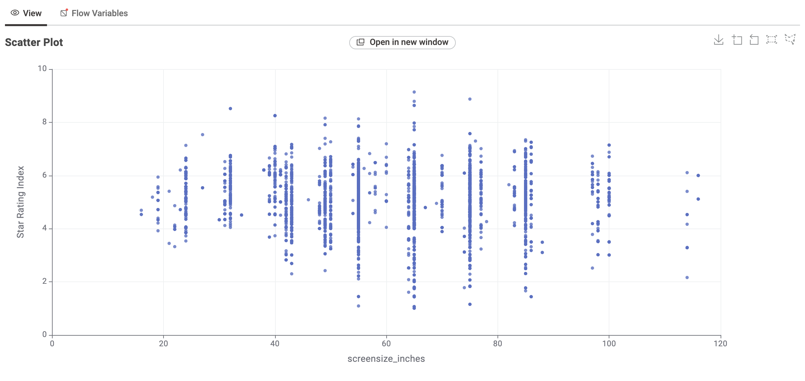
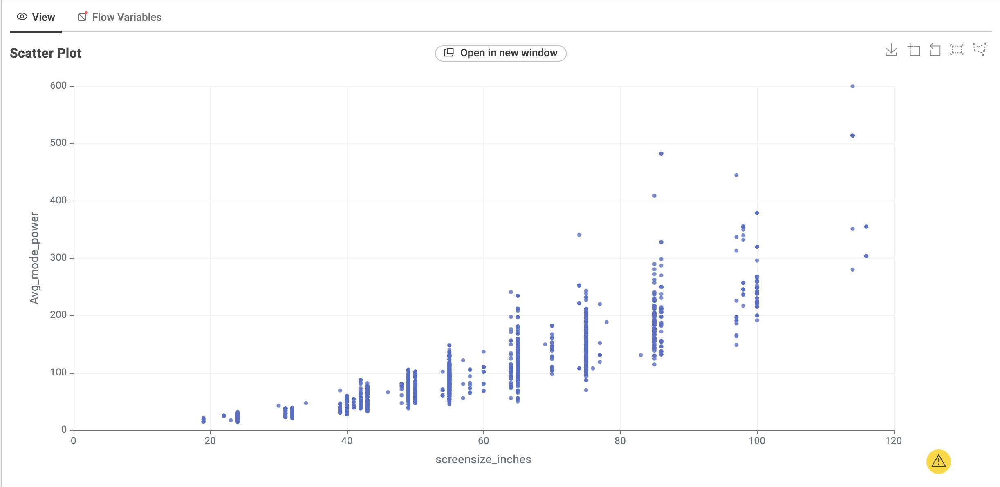

Television Energy Tips
Simple ways to understand television energy use before choosing a new screen.
Size and technology matter. Larger screens generally use more energy, while modern LED/LCD and OLED televisions can be more efficient than older technologies.
- Use Energy Saver or Eco mode and reduce brightness when comfortable.
- Disable always-listening voice features if you do not use them.
- Compare star ratings and annual kWh on the energy label before purchasing.
TV Energy Insights: Data Story
This section explores the Australian Government's Television Energy Rating dataset. The patterns below help Australian consumers compare technology, screen size, brand availability, and energy efficiency before choosing a TV.
Chart 1: What TV technologies are most common?

LCD(LED) models make up most listings, while OLED is less common.
Chart 1: Technology counts

The bar chart shows LCD(LED) is leading position in the dataset.
Chart 2: What screen sizes are most frequent?

55-inch and 65-inch TVs are most common.
Chart 3: Which brands dominate the market?

Kogan, LG, and Samsung Electronics have the largest number of listed models.
Chart 4: Which screen type uses the least power?

LCD TVs use the least power in this comparison, while OLED uses slightly more.
Chart 5: How does screen size relate to power use?

The relationship is clearly positive: larger TVs generally use more power.
Chart 6: How do star rating and screen size relate?

Star ratings are spread across sizes, showing that bigger TVs can still be efficient when well designed.
Conclusion
When choosing a TV, balance screen size, technology, brand, and efficiency. A 55-inch LED TV is common and can be an energy-smart choice for many households.